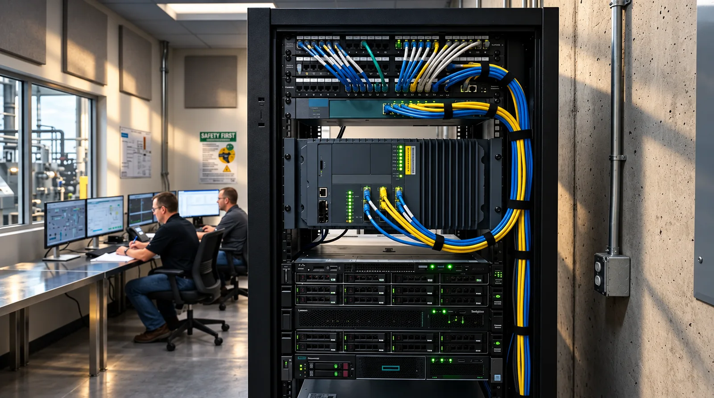

Access Controls and Audit Records.
Platform concept / interactive demonstrations use sample data. No live customer or machine connection.
An ingestion-to-application pipeline engineered specifically for industrial engineering workflows, with strict role-based access control, cryptographic auditability, and human write boundaries.
End-to-End Execution Flow
Every user request flows through a deterministic interpretation and policy validation layer before accessing any connected enterprise system.
Users & Team
Plant managers, structural engineers, QC chiefs
ProRack AI Core
Context synthesis & semantic cross-referencing
Controlled Tool Layer
RBAC permissions, audit logging, human sign-off
Enterprise & Factory
ERPNext · Tekla · PowerFab · PLCs · WMS
Core Architectural Principle: ProRack AI does not replace your source systems of record; it connects, interprets, and surfaces operational intelligence across them. Your ERP, CAD/BIM models, and factory PLCs continue operating as the authoritative sources of truth.
Six Pillars of Enterprise Governance
The proposed architecture checks user permissions, records access and requires approval for changes to connected systems.
Source-Level RBAC
ProRack AI inherits permission scopes directly from ERPNext and Microsoft 365. An employee without commercial margin visibility cannot query cost data through the AI assistant.
Immutable Audit Trails
Every query, telemetry extraction, and user action is cryptographically logged with user identity, timestamp, and source system citations to support audit reviews.
Controlled Write Boundary
The AI layer is read-only by default. Any operational write-action (e.g. releasing a hold on a work order) strictly requires explicit authorized human confirmation.
Deterministic Citations
Operational inquiries are answered strictly with verifiable citations to underlying structural models, ERP documents, and machine PLCs. Speculative answers are explicitly blocked.
On-Premises Edge Relays
Lightweight edge agents interface with machine PLCs using outbound-only TLS 1.3 connections, preventing inbound exposure of factory OT networks to the public internet.
Complete Sovereignty
Structural CAD files, proprietary roll-forming die profiles, customer layouts, and cost metrics remain isolated in your private environment and are never used for public model training.
On-Premises Edge Relay Architecture.
To protect mission-critical cold roll-forming lines and punch presses, ProRack AI operates hardened edge compute nodes deployed inside factory OT environments with outbound-only TLS 1.3 telemetry encryption.
- ✓ Industrial DIN-rail IPC running isolated deterministic telemetry collectors
- ✓ Modbus TCP and OPC-UA isolation preventing inbound external connections
- ✓ 50 ms local buffering designed to retain telemetry during network drops
